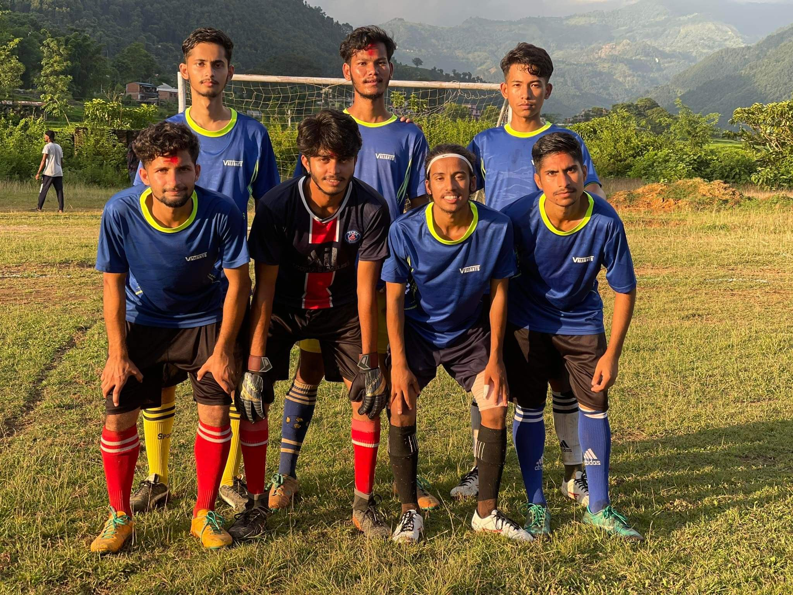
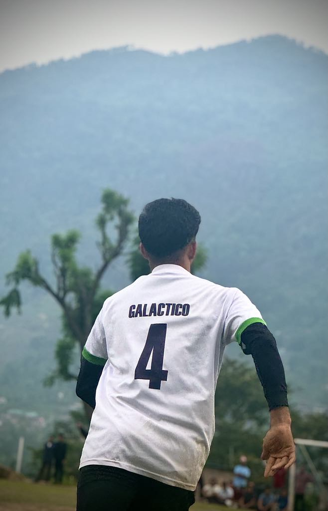
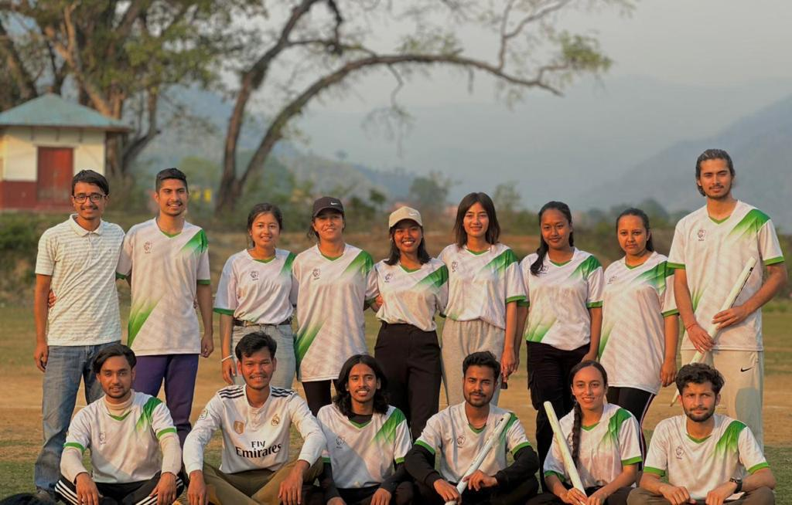
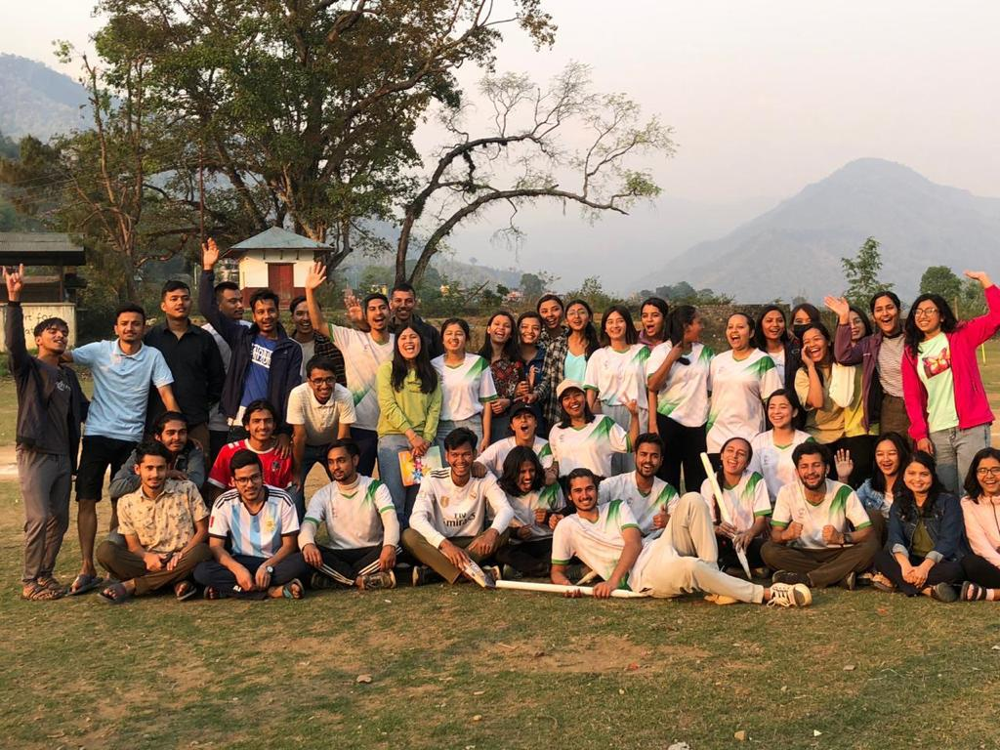
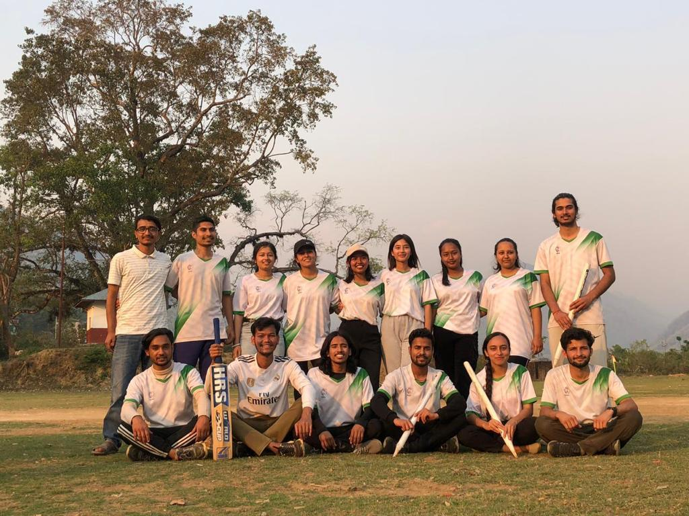

Athletic Journey & Reflections
Football • Chapter I
ICONICS-NSU
"The passion begins on the pitch—every match brings a new story of unity, determination, and camaraderie."

Football • Chapter II
Second Final LineUp
"Standing together before the final whistle. Trust in your squad turns strategic effort into collective success."

Football • Chapter III
Galactico 4
"Wearing jersey #4 with pride—reminding us that resilience and heart define every play."

Cricket • Chapter IV
Cricket Squad ICONICS
"Stepping onto the cricket field—where patience, precision, and mutual respect pave the way forward."

Cricket • Chapter V
Team Celebration
"Shared achievements create timeless memories. Joy earned together after grueling tournament days."

Cricket • Chapter VI
The Finalists
"Honoring the journey to the top. Grit, sportsmanship, and unforgettable sportsmanship along the path."